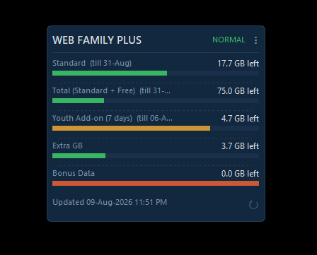

Monitor Your Data.
Without the Clutter.
A beautiful, privacy-focused Windows desktop widget that sits quietly on your screen and tracks your broadband usage in real-time. No browser tabs. No distractions.
Requires Windows 10/11 • 100% Free & Open Source
